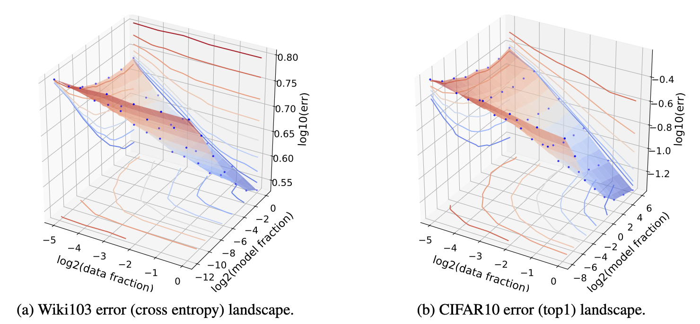
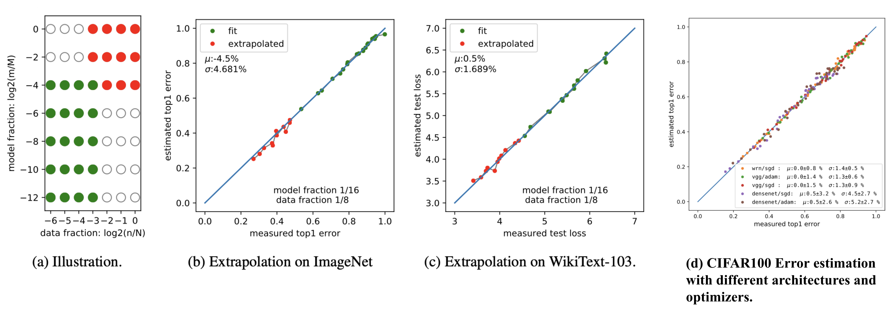
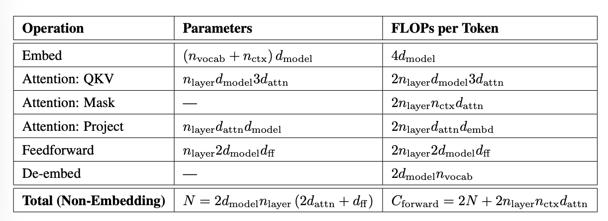
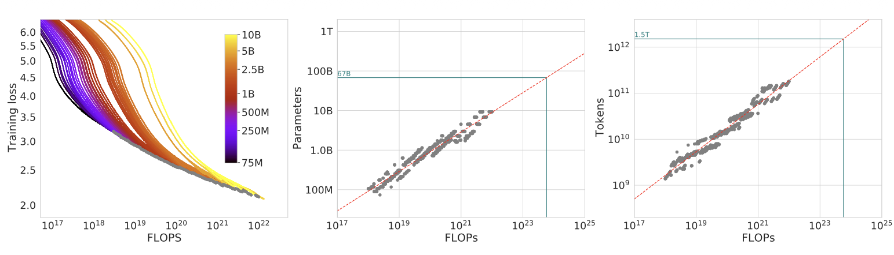
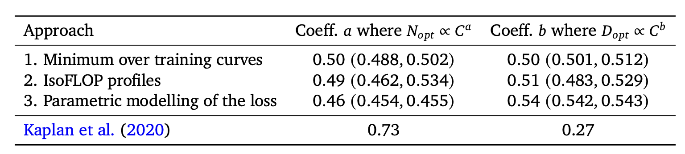
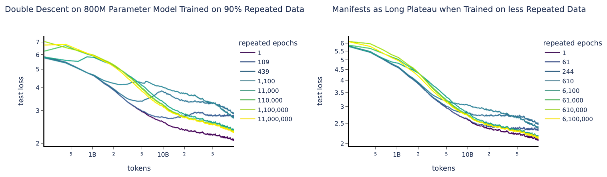
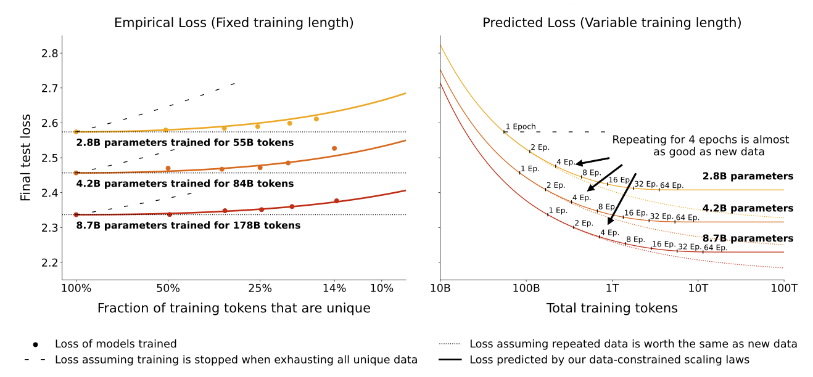
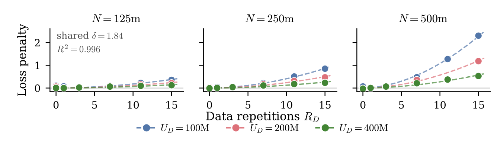
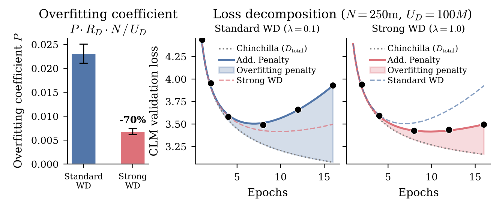

Scaling laws are one of the most critical empirical findings in deep learning. The observation is simple in form: the training loss $L$ decreases predictably as we scale up model size $N$, dataset size $D$, and compute $C$, following a power-law curve, which appears as a straight line on a log-log plot. We can view scaling laws as a framework for describing the relationship between compute, loss, model size and data; at its core, it is about how to allocate precious compute optimally between $N$ and $D$.
This predictability makes scaling laws highly valuable in practice. A common workflow is to fit scaling laws on a handful of small runs and then extrapolate to estimate the token and compute requirements for larger models.
| Symbol | Note |
|---|---|
| $N$ | Model size, measured in parameter count. |
| $D$ | Training dataset size, usually measured in token count. |
| $C$ | Training compute in FLOPs. As a useful approximation, $C \approx 6ND$ (Kaplan et al. 2020), where $2ND$ accounts for the forward pass and $4ND$ for backpropagation. |
| $E$ | Irreducible loss |
| $L, \hat{L}(.)$ | Test loss / test loss prediction function; can also refer to training loss, since they are strongly correlated. |
| $\epsilon$ | Generalization error. |
Early days: ML loss predictability
The predictability of generalization error with scale had already been investigated before scaling laws became a mainstream concept.
Amari et al. (1992) derived four types of learning curves using a Bayesian approach and the annealed approximation.
- Deterministic learning algorithm, noiseless data, one unique solution: $\epsilon \sim c \cdot D^{-1}$, where $c$ is some constant.
- Deterministic learning algorithm, noiseless data, multiple equivalent solutions: $\epsilon \sim c \cdot D^{-2}$; the learning is faster with each new data point, because the model only learns the optimal manifold of parameters, instead of finding the single solution point.
- Deterministic learning algorithm, noisy data: $\epsilon \sim c \cdot D^{-1/2}$; noises in data make learning harder.
- Stochastic learning algorithm, noisy data: $\epsilon \sim c \cdot D^{-1} + E$; here the irreducible loss $E$ is the residual error that a stochastic learner cannot reduce further, for example when the model runs out of capacity on large data. All four types of learning curves follow a power law:
where $E$ can be 0 and $\alpha = -2, -1, -1/2$. Although their theoretical setup is based on a simplified binary classification task, it points in a useful direction for building empirical ML loss prediction models.
One of the earliest empirical studies by Hestness et al. (2017) explained the relationship between generalization error, model size and data. For a given training data size, they identified the best-fit model size via grid search and then plotted loss against training dataset size. Across four different domains in deep learning (neural machine translation, image classification, language modeling, and speech recognition), a recurring pattern was observed where:
- Generalization error scales as a power law across a set of factors (e.g. data size).
- Model improvements shift the error curve but do not seem to affect the power-law exponent.
- Interestingly, architecture changes the offset ($E$) of the power-law fit but does not change the exponent ($\alpha$). The slope of the power law appears to be a property of the problem domain rather than the model architecture.
- The number of model parameters $N$ needed to fit a dataset of size $D$ also scales as a power law.

A conceptual illustration breaks the learning curve into three stages. In the small-data region, when there are not enough learning signals, the model performs only slightly better than random guessing. In the middle (“power-law region”), we observe a power-law relationship between loss, data, and model size. The final irreducible-error region can be attributed to factors such as noise in the data.

Rosenfeld et al. (2020) pushed this further by trying to model error as a joint function of both model size $N$ and data size $D$, across a diverse set of architectures (ResNet, WRN, LSTM, Transformer) and optimizers (Adam, SGD variants). Empirically they observed that, holding one axis fixed, the error decays as a power law in the other:
which can be combined into a joint form:
where $A > 0, B > 0, \alpha \geq 0, \beta \geq 0$ are scalar constants and $E$ is not dependent on either $N$ or $D$.

Thus, they can build a prediction model in the form of a simple parametric function with $\boldsymbol{\theta} = \langle A, B, E, \alpha, \beta \rangle$ to predict the expected loss for $(D, N)$ > certain thresholds by only training on a set of smaller training configs, $(D, N)$ < certain thresholds.

Side note: These early works lean on classical learning-theory intuition like the VC dimension (the cardinality of the largest set of points a model can shatter) as a proxy for capacity, but in modern deep learning work the VC dimension is often too coarse to explain the behavior and the empirical power laws turned out to be much cleaner and more practical than the worst-case bounds that theory provides.
Scaling Laws in Data-Infinite Region
Kaplan et al.’s Scaling Laws
Kaplan et al. (2020) popularized the concept of scaling laws in the language modeling community. They found that the cross-entropy test loss $L$ scales as a power law with each of model size $N$ (excluding embedding layers), dataset size $D$, and training compute $C$ across many orders of magnitude. The findings are aligned with early work in the last section, but Kaplan et al. formalized the concept with a focus on Transformer language models and empirical experimentation at a larger scale, with model size ranging from 768M to 1.5B non-embedding parameters and dataset size from 22M to 23B tokens. All training runs in the paper used a learning rate schedule with a 3000 step linear warmup, followed by a cosine decay to zero.
List of key findings:
- The loss $L$ scales as a power law with $N$, $D$, and $C$ individually; for optimal performance all three must scale in tandem.
- Training curves follow predictable power laws whose parameters are roughly independent of model size.
- Larger models are more sample-efficient, meaning that they reach a given loss with fewer optimization steps and fewer data points than small models.
- Architectural details (width, aspect ratio, etc.) matter less than sheer scale.
- Train loss and test loss are positively correlated. (Sounds trivial but this is the foundation for pretraining work. On the other hand, whether pretraining loss improvement transfers to posttraining evaluation needs separate studies.)
- Given a fixed compute budget, it is more efficient to train a very large model and stop before convergence than to train a smaller model all the way to convergence. This finding is where the Chinchilla scaling laws (the next section) disagree: Kaplan et al. overestimated the optimal model size as their fitted exponent was larger.
They summarize the joint dependence on $N$ and $D$ in a single equation:
A nice consequence of this form is that the extent of overfitting (i.e. model is complex or data is small) depends predominantly on the ratio $N^{\alpha / \beta} / D$, which indicates that the data needs to grow in a specific proportion to the growth of the model size to avoid training being data-limited.

The most influential and, in hindsight, most contested conclusion was the compute-optimal allocation. Kaplan et al. found $N_\text{opt} \propto C^{0.73}$ and concluded that model size should grow faster than dataset size. Concretely, for a 10x increase in compute they suggested scaling the model size by ~5.5x but the training tokens by only ~1.8x. The Chinchilla paper would later overturn this recommendation, arguing that it leaves large models badly undertrained.
Another useful analysis in Kaplan et al. approximates the number of training FLOPs needed based on $D$ and $N$. Each multiply-add is counted as ~2 FLOPs.

Given a standard config where $d_\text{attn} = d_\text{model} = d_\text{ff}/4$, and excluding embedding layers from $N$ and the per-token forward compute:
Then we count backward-pass FLOPs as twice the forward-pass FLOPs, because backpropagation runs two matrix multiplications, for gradients with respect to the input activations and the weights, respectively. Thus, in total, the training FLOPs per token are approximately $6N$, and the total FLOPs for training over $D$ tokens are $C \approx 6ND$.
Chinchilla Scaling Laws
The Chinchilla paper (Hoffmann et al. 2022) studied the relationship between the optimal model size $N$ (total parameters, including embeddings) and the number of tokens $D$ under a fixed compute budget $C$ with a more careful experimental design and arrived at a somewhat different answer from Kaplan et al..
The central question is on the best strategy to allocate resources given a constraint $\text{FLOPs}(N, D) = C \approx 6ND$. In other words, when we have only limited FLOPs (a given number of GPUs running for a given period of time), how should we choose between more data tokens and more model parameters?
The Chinchilla paper presented three neatly designed methods for scaling laws fitting.
The empirical experiments scanned over 400 models, with sizes from 70M to over 16B parameters and training tokens from 5B to 500B. The experiments were under the assumption that every training token is unique (the infinite-data regime). All runs used a cosine learning-rate schedule decaying by 10x over the training horizon. Sweeping over model sizes traces out the compute-optimal frontier.
Method 1: Fix model sizes, vary the token budget
For each parameter count $N$, train several runs with different token budgets, and record the minimal loss achieved per FLOP budget $C$.

Method 2: IsoFLOP profiles
Fix a compute budget $C$ and plot the final loss against parameter count $N$. Each iso-FLOP curve is roughly a parabola in log-space, and its minimum flags the optimal model size for that compute budget. Then repeating across budgets traces a power-law line in the plot.

Method 3: Parametric fit
Fit the same parametric function as in Rosenfeld et al. (2020) directly,
We can actually get a closed form approximation of optimal $N_\text{opt}(C), D_\text{opt}(C)$ by minimizing $\hat{L}(N, D)$ under the constraint $\text{FLOPs}(N,D) = C \approx 6ND$.
First let’s reduce the expression to contain only $N$:
When $\alpha \approx \beta$, model size and training tokens should scale at equal rates.
To find the optimal $\boldsymbol{\theta} = \langle A, B, E, \alpha, \beta\rangle$, the Chinchilla paper adopts a Huber loss (robust to outliers; $\delta=10^{-3}$) and the L-BFGS algorithm (good for curve fitting with a small number of parameters).
Chinchilla arrives at its answer through three complementary methods whose final results agree with each other, and this is part of why the result was quite convincing.


The claim in the Chinchilla paper that most large models (at the time, ~2022) were undertrained is supported by a famous demonstration: under the same compute budget as Gopher (Rae et al. 2021; 280B parameter count, 300B token budget), they trained Chinchilla (70B parameter count, 1.4T token budget), a model 4x smaller but trained on roughly 4x more tokens and it outperformed Gopher across the board.
Reconciling Kaplan and Chinchilla
The Chinchilla scaling laws disagree with Kaplan et al. as follows:
- Instead of “grow the model faster than the data” ($N_\text{opt} \propto C^{0.73}$), for every doubling of model size, you should also double the number of training tokens ($N_\text{opt} \propto C^{0.5}$).
- Instead of “train a big model and stop before convergence,” you should train a smaller model on more data.
Both papers still agree on the same underlying principle, but they disagree on where the optimal size-vs-token tradeoff lies. Why do they disagree so much?
Difference 1: Kaplan et al. experimented mostly on small models. Kaplan et al. experimented mostly on smaller models, while the Chinchilla paper’s experiments reached more than 10x larger scales. When we extrapolate in log-log space, a small difference in the fit can result in large differences (See toy simulation).
Difference 2: Embedding parameter count matters for small models. In the small-parameter regime, embedding parameters are a non-negligible fraction of the total and thus counting them or not matters. Pearce & Song (2024) did a thorough analysis along this line. Let’s use $N_{\setminus E}, C_{\setminus E}$ to denote model size and compute when embedding is excluded and use $N, C$ to count total parameters.
- Kaplan et al.: $N^*_{\setminus E} \propto C^{0.73}_{\setminus E}$ (non-embedding)
- Chinchilla: $N^* \propto C^{0.50}$ (total)
To bridge them, they fit a relationship between total parameters $N_T$ and non-embedding parameters $N_{\setminus E}$, for some constant $\omega$:
This form has nice properties of being strictly increasing and $\lim_{N \to \infty} N = N_{\setminus E}$ (because $\frac{N}{N_{\setminus E}} = 1 + \omega {N_{\setminus E}}^{- \frac{2}{3}}, \lim_{N_{\setminus E} \to \infty} \frac{N}{N_{\setminus E}} = 1$.
Plugging this into the Chinchilla laws equation,
The relationship between $C_{\setminus E}$ and $N_{\setminus E}$ in the above equation is no longer a clean power law. We can only approximate it locally as $N^*_{\setminus E} \overset{\propto}{\sim} C_{\setminus E}^g$, where $g$ is a local exponent based on a first-order derivative ($\overset{\propto}{\sim}$) rather than a global power-law exponent, resulting in $g = \frac{\mathrm{d} \log C_{\setminus E}}{\mathrm{d} \log N_{\setminus E}}$. See the full details of how the exponent $g$ is approximated in Appendix A.1 in Pearce & Song (2024).

As shown in the visualization above, as $C_{\setminus E}$ gets larger, $g$ converges to the Chinchilla estimate. By generating synthetic training curves using above equation, in the range of model size from 768M to 1.5B (as in Kaplan et al.), they estimated that $g$ is close to the Kaplan coefficient of 0.73 in that region.
Why power law?
Power laws are widely observed across many domains outside AI, such as in Zipf’s law, scale-free networks, urban scaling laws, and many other complex systems. The recurring pattern is that large events are rare, small events are common and the relationship between size and frequency often follows a straight line at log-log scale.
Why do LLM scaling laws also have the shape of a power law?
Inspired partly by different domains displaying different exponents (Hestness et al. 2017), one early explanation by Sharma & Kaplan (2020) hypothesizes that language modeling can be viewed as doing regression on a low-dimensional manifold of data. More model parameters can induce a finer partition of the data manifold and therefore smaller generalization error. In the simplest terms, if a model of effective size $N$ partitions a $d$-dimensional manifold into $O(N)$ regions, the typical linear resolution scales like $\sim N^{-1/d}$. This has a similar power-law form to the scaling laws above. This theory applies most cleanly in the infinite-data, underfitting regime, but in reality estimating the intrinsic dimension of a data manifold is quite hard.
A later hypothesis (Michaud et al. 2023, Brill 2024) assumes that knowledge or skills are learned in discrete chunks (“quantized”) and that the frequency distribution of these skills follows a power law. The model learns common skills first and rare skills later, resulting in a smooth power-law decay in loss.
I only listed two hypotheses here, but there are more studies on explaining the shape of power-law scaling through spectral tails of data, kernel eigenvalues, natural-language statistics, or phase transitions in training dynamics.
Scaling Laws in Data-Limited Region
Classic scaling laws assume effectively unlimited unique data, no repetition, and no multi-epoch training. As the model size grows significantly, we are running out of enough high-quality unique tokens. In fact, some arguments about how long scaling in AI can continue are centered on whether we are hitting a “data wall”.
It is also worth emphasizing that the dataset behind $D$ is expected to be already cleaned. The pretraining data pipeline is often a large part of an effective pretraining pipeline, with common steps like deduplication (exact and fuzzy), quality filtering, boilerplate removal, safety filtering, PII/copyright masking, benchmark decontamination and careful reweighting of data mix components based on language, quality, content type, etc. Even when two datasets contain the same token count $D$, a high-quality dataset and a dataset of Internet slop can yield drastically different compute efficiency.
The study by Hernandez et al. (2022) focused on a controlled version: a mostly-unique dataset with a small fraction of repeated data. Starting from a large dataset, the data mix keeps 90% non-repeated but replaces the remaining 10% with repeats of a tiny portion of the original. By training a Transformer model for 100B tokens, they observed a double-descent phenomenon, that is, the test loss can actually get worse and then better again as a function of how much the repeated data is emphasized, an effect that becomes more pronounced as the repeated fraction grows.

The flat or increasing trend in the middle of training is possibly due to memorization of repeated data. Learning curves with such shapes make scaling law fitting less accurate. They also concluded repeated data hurts some OOD evaluation and downstream fine-tuning. However, their data mix is constructed in a more lab-like setup, and repetition in real-world data is often more nuanced (e.g. different data has different levels of repetition, semantic repetition, etc.).
Rather than saying data repetition hurts training, we are more interested in how to fit scaling laws, given that the unique high-quality data is not infinite and we likely have to repeat data during training.
Muennighoff et al. (2023) took on the research question of how compute should be allocated optimally when model training is data-constrained. Specifically, they empirically studied the impact of data repetition across roughly 400 experiments, 10M–9B parameters, data sizes up to 900B tokens, and up to 1500 epochs. The exact same dataset is repeated each epoch, shuffled between epochs, and evaluated on a held-out test set.
The key modeling adjustment is to decompose the total token count $D$ into two parts: (i) the number of unique tokens $U_D$ and (ii) the number of repeats $R_D$ (i.e. num. epochs - 1). Thus we have $D = U_D(1 + R_D)$. With a unique-data budget $D_\text{uniq}$, by definition $U_D = \min \{{ D_\text{uniq}, D\}}$ and $R_D = (D / U_D) - 1$. They use the Chinchilla scaling laws to find the optimal model size $U_N$ for fitting $U_D$, and define excess model size via repeats $R_N = (N / U_N) - 1$.
They then update the Chinchilla parametric fit (method 3) to use effective (discounted) data $D’$ and model size $N’$ in place of the raw quantities:
The intuition is that a token’s value decays exponentially as it is repeated. In their modeling, each repetition costs the token a $(1 - 1/r_D)$ fraction of its remaining value, where $r_D$ is a learnable “half-life” parameter. When $R_D = 0$ or $R_D \ll r_D$, we recover $D’ \approx D$.
A symmetric formulation handles excess model size, $N’ = U_N + U_N r_N(1 - \exp(-R_N / r_N))$, capturing the idea that “larger models overfit more quickly on repeated data” and that “a model can be too large for its dataset.” This component is less intuitive, and I could not find a satisfactory explanation for why model size needs to appear in such a symmetric form as repeated data. Later work by Lovelace et al. (2026) changed this assumption.
Their empirical fit finds that excess parameters decay faster in value than repeated data, $r_N < r_D$, so we should allocate more resources on more epochs rather than more model parameters. One weakness of this modeling, as the authors also pointed out, is that it significantly underestimates the final test loss of failing models (i.e. models whose loss increases midway through training), such as models trained for 44 epochs.

Most recently, Lovelace et al. (2026) revisited the same problem with a different approach. Rather than modeling overparameterization as a diminishing return on effective model size, Lovelace et al. model the interaction between model size $\times$ data repetition explicitly. Empirically, they trained about 300 models, spanning 15M to 1B parameters and 50M to 6B unique tokens.
When they plot the fit residual for a fixed model size across a range of data-repetition levels, the observation is intuitive: more epochs cause more damage, and interestingly larger models are more sensitive to repetition. This hints that the loss penalty is likely a function of both model size and data size.

An explicit overfitting penalty term was introduced and built around the capacity ratio $N / U_D$ (parameter count relative to unique tokens):
where:
- $R_D$ is the repetition count;
- the scalar $P$ is a learnable parameter;
- the exponent $\kappa$ (the 2nd learnable parameter) lets the penalty scale nonlinearly with the capacity ratio $N / U_D$;
- the separate exponent $\delta$ (the 3rd learnable parameter) on the repetition count decouples repetition nonlinearity from $\kappa$.
The added term (in red) is a direct overfitting penalty that grows with both how many times you repeat the data and how over-parameterized the model is relative to the unique data available.
They also did a case study on how weight decay impacts training with the limited-data constraint and found that strong weight decay reduces the overfitting penalty caused by data repetition.

Both modeling approaches by Muennighoff et al. and Lovelace et al. are constructed from empirical curve fitting, so it is still unclear why data-constrained scaling laws should have exactly these forms and why each free parameter is needed. Curious about more theoretical work along this line.
Trickiness of Fitting Scaling Laws in Reality
Despite its clean form, in practice, scaling law fitting can be surprisingly sensitive to seemingly trivial procedural choices, like how you count parameters, how you round the precision, how you sum or average the loss, etc.
Because a scaling law is only fit on the (relatively small, relatively cheap) models that we can afford to train, and the prediction is extrapolated for a model orders of magnitude larger. In such a setup, choices that look like rounding error may lead to wild differences in prediction.
Meanwhile, scaling-law fitting assumes the only changing factor is scale, which means that the model architecture, optimizer, learning rate schedule, batch ramp, data mix, tokenizer, and other design choices should remain the same. Another underlying assumption is that all these settings should have been carefully tuned, as cases like undertrained models can lead to a different conclusion.
The disagreement between results by Kaplan et al. and Chinchilla is one example to showcase the trickiness of scaling laws fitting.
A second example is a follow-up analysis investigating why Chinchilla method 3 is slightly off from the other two methods. Besiroglu et al. (2024) extracted the raw $(N, D, L)$ data points from Figure 4 of Hoffmann et al. (2022) and re-ran the method 3 parametric fitting. They found a couple of concrete issues:
- A high loss scale in the L-BFGS-B minimizer, caused by averaging Huber-loss values over examples instead of summing them, which led to premature termination of the optimization. The early stopping of loss minimization during both the original fit and bootstrapping produced inconsistent estimates and implausibly narrow confidence intervals.
- The reported $\alpha$ and $\beta$ were rounded to 2 digits of precision, which made the derived $A, B$ look more off than they really were.
Toy simulation
Here is a toy simulation widget, created by ChatGPT, designed to demonstrate three specific failure modes.
We assume the ground truth function is:
and thus $N_\text{opt} \propto C^{0.5126}, D_\text{opt} \propto C^{0.4874}$. This is the estimate from Besiroglu et al. (2024).
The simulation plots the loss prediction $\hat{L}$ vs dataset size $D$, while providing a set of sliders to show case:
- Loss precision: rounding losses from high to low decimal points can change the fitted parameter values.
- Loss noise: perturbing loss values by only a multiplier of milli-loss (0.001) units leads to different fit.
- Fit-region sensitivity: fitting only small models, only medium models, or all models gives different apparent scaling laws.
Citation
Please cite this work as:
Weng, Lilian. “Scaling Laws, Carefully”. Lil’Log (Jun 2026). https://lilianweng.github.io/posts/2026-06-24-scaling-laws/
Or use the BibTex citation:
@article{weng2026scaling,
title = {Scaling Laws, Carefully},
author = {Weng, Lilian},
journal = {lilianweng.github.io},
year = {2026},
month = {June},
url = "https://lilianweng.github.io/posts/2026-06-24-scaling-laws/"
}
References
[1] S. Amari, N. Fujita, and S. Shinomoto. “Four Types of Learning Curves. Neural Computation.” 4(4):605–618, 1992.
[2] Hestness et al. “Deep Learning Scaling is Predictable, Empirically.” arXiv preprint arXiv:1712.00409, 2017.
[3] Rosenfeld et al. “A Constructive Prediction of the Generalization Error Across Scales.” ICLR 2020.
[4] Kaplan et al. “Scaling Laws for Neural Language Models.” arXiv preprint arXiv:2001.08361, 2020.
[5] Hoffmann et al. “Training Compute-Optimal Large Language Models.” NeurIPS 2022.
[6] Pearce and Song. “Reconciling Kaplan and Chinchilla Scaling Laws.” TMLR 2024.
[7] Bahri et al. “Explaining Neural Scaling Laws.” arXiv preprint arXiv:2102.06701, 2021.
[8] Sharma and Kaplan. “A Neural Scaling Law from the Dimension of the Data Manifold.” arXiv preprint arXiv:2004.10802, 2020.
[9] Hernandez et al. “Scaling Laws and Interpretability of Learning from Repeated Data.” arXiv preprint arXiv:2205.10487, 2022.
[10] Muennighoff et al. “Scaling Data-Constrained Language Models.” NeurIPS 2023.
[11] Lovelace et al. “Prescriptive Scaling Laws for Data Constrained Training.” arXiv preprint arXiv:2605.01640, 2026.
[12] Besiroglu et al. “Chinchilla Scaling: A Replication Attempt.” arXiv preprint arXiv:2404.10102, 2024.
[13] Michaud et al. “The Quantization Model of Neural Scaling” NeurIPS 2023.
[14] Brill. “Neural Scaling Laws Rooted in the Data Distribution.” arXiv preprint arXiv:2412.07942, 2024.
[15] Rae et al. “Scaling Language Models: Methods, Analysis & Insights from Training Gopher.” arXiv preprint arXiv:2112.11446, 2021.